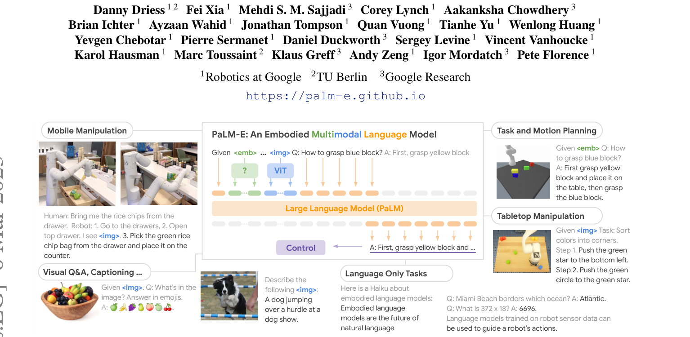
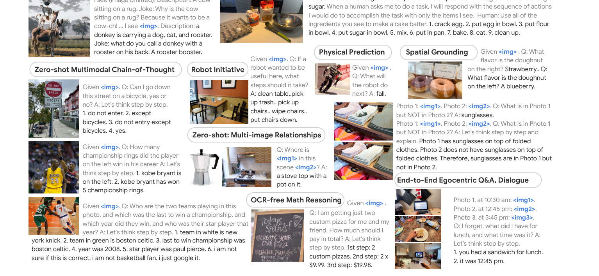

제출: 2023년 3월 6일 · 백본 PaLM(최대 540B) + ViT(최대 22B), 최대 562B 통합 · SayCan·TAMP·Language-Table 실증 · ICML 2023
한 줄 요약 (TL;DR)
사전학습된 대형 LLM(PaLM)에 연속 관찰(이미지·상태·객체 중심 신경장)을 단어 임베딩 공간에 직접 임베드해 넣는 구현체(embodied) LLM. 별도 어댑터·API 브리지 없이 시각·언어·로봇 계획을 하나의 시퀀스로 처리한다. 최대 562B(PaLM-540B + ViT-22B) 규모. TAMP·Language-Table·모바일 매니퓰레이션 세 로봇 도메인과 일반 VQA를 한 모델로 동시 학습해 강한 긍정 전이(positive transfer)를 확인. PaLM-E-562B는 OK-VQA SOTA와 함께 로봇 계획 능력을 유지·향상. "언어 모델을 로봇의 브레인으로" 흐름의 전환점 논문.
1배경 · 문제의식
당시(2023 초) 대형 LLM은 텍스트 위주 지식엔 강했지만 실제 물리 세계와의 grounding이 없어 로봇 계획에 그대로 쓰기 어려웠다. SayCan 같은 앞선 시도는 LLM이 "가능한 스킬 텍스트"를 뽑고 별도의 affordance 모델이 필터링하는 텍스트 브릿지 방식. PaLM-E는 이 브릿지를 없애고 이미지·상태 관찰을 언어 토큰과 동일한 임베딩 공간에 넣어 end-to-end 학습으로 grounding까지 얻어낸다.
2핵심 Contribution
Embodied LLM 프레임워크 — 사전학습 LLM의 embedding 공간에 이미지·상태·객체 중심 표현을 직접 주입하는 통합 아키텍처.
다중 로봇 도메인 & VQA 공동 학습으로 긍정 전이 — 하나의 PaLM-E를 TAMP·Language-Table·모바일 매니퓰레이션·인터넷 VQA 데이터로 동시 학습해 각 도메인 성능 향상 확인. 인터넷 시각-언어 데이터가 로봇 성능을 크게 끌어올림.
스케일업의 실질적 이점 실증 — 모델 규모(12B→84B→562B)를 키울수록 catastrophic forgetting 감소와 로봇+VQA 성능 동시 개선. OK-VQA에서 당시 SOTA.
다양한 입력 표현 실험 — 단순 ViT 토큰, OSRT(객체 중심 신경 씬 표현), 상태 벡터, 엔티티 referral 등을 비교.
3Method
구조 — 관찰을 임베딩으로
이미지 I에 대해 인코더 φvision(I)를 통과시켜 얻은 특징을 학습형 projection으로 LLM 단어 임베딩 차원에 매핑, 텍스트 토큰과 혼합된 시퀀스를 만든다. LLM은 이 혼합 시퀀스에서 autoregressive하게 텍스트 출력을 생성. 로봇 계획은 텍스트로 표현된 스킬 시퀀스(예: "1. pick red block. 2. place on green bowl")로 뽑히고, 저수준 정책이 실행.
입력 표현 종류 비교
ViT 토큰 — 일반 ViT/ViT-22B feature를 그대로 projection.
OSRT (Object Scene Representation Transformer) — 객체 중심 3D 신경 표현으로, 씬을 물체별 슬롯으로 분해해 임베딩.
상태 벡터 — 로봇 관절/객체 포즈 등 저차원 상태를 MLP로 임베딩.
엔티티 referral — "<obj_1> = 파란 블록" 식으로 텍스트-객체 바인딩을 미리 프롬프트에 삽입.
백본 구성 & 규모
LLM 백본
PaLM (8B / 62B / 540B)
비전 인코더
ViT-4B → ViT-22B
최대 통합
PaLM-E-562B (PaLM-540B + ViT-22B)
학습
여러 로봇 데이터 + WebLI 등 인터넷 시각-언어 데이터 공동 학습
학습 방식
Cross-entropy 언어 모델링 손실 하나로 모든 도메인 통합 학습. 이미지 인코더는 함께 fine-tuning(스케일에 따라 부분 동결). 모델 규모가 커질수록 여러 도메인 공동 학습으로 인한 forgetting이 줄고, 오히려 각 도메인 성능이 올라가는 positive transfer 관찰.
4실험 결과
3개 로봇 도메인
TAMP (Task and Motion Planning) — 계획 단계별 성공률에서 OSRT 입력이 ViT보다 유리. 인터넷 시각-언어 데이터 공동 학습이 성능을 크게 향상.
Language-Table — "빨간 별을 파란 삼각형에 옮겨" 같은 조작 지시. PaLM-E가 SayCan+PaLI 대비 큰 폭 성능 향상.
모바일 매니퓰레이션 (Google Robot) — 주방 환경 장기 조작. PaLM-E-562B가 SayCan 대비 planning success 큰 폭 개선.
일반 VQA / 비전-언어
OK-VQA에서 PaLM-E-562B가 당시 SOTA 달성. VQAv2·COCO caption에서도 강한 성능을 유지 — 로봇 학습이 VQA 성능을 손상시키지 않고 오히려 함께 개선.
스케일 & 긍정 전이
PaLM-E-12B → 84B → 562B로 갈수록 로봇+VQA 공동 학습에서 언어 능력 저하가 완화. 562B에서는 로봇 데이터를 함께 학습해도 언어 성능이 거의 유지되며, 개별 로봇 태스크 성능은 대형 모델일수록 더 좋음.
5Ablation (주요 발견)
입력 표현: 로봇 조작 계획에서 OSRT(객체 중심 3D 표현)가 순수 ViT 토큰보다 sample efficiency와 최종 성능 모두에서 우세.
인터넷 시각-언어 공동 학습: 로봇 데이터만 학습할 때보다 VQA·WebLI 등 대규모 인터넷 데이터를 함께 학습한 편이 로봇 태스크 성능이 훨씬 좋음.
스케일과 catastrophic forgetting: 작은 모델은 로봇 데이터를 붙이면 원래 언어 능력이 크게 하락. 562B는 하락이 미미 → 스케일이 다중 도메인 융합의 안전장치.
사전학습된 LLM 얼리는 vs 파인튜닝: LLM을 함께 파인튜닝할 때가 성능 최고. 큰 모델일수록 튜닝의 forgetting 위험이 낮음.
6핵심 Figure / Table

Figure 1 — PaLM-E 개요. 이미지·상태 관찰을 언어 임베딩 공간으로 사영해 텍스트 토큰과 하나의 시퀀스로 만들고, PaLM이 로봇 계획·VQA·캡션을 모두 텍스트로 출력. (출처: arXiv:2303.03378)

Figure 2 — 다중 도메인 & 다양한 입력 표현. TAMP, Language-Table, 모바일 매니퓰레이션 세 로봇 도메인과 ViT·OSRT·상태 벡터 입력 표현을 하나의 모델로 처리. (출처: arXiv:2303.03378)
핵심 결과 요약 — PaLM-E-562B가 OK-VQA SOTA + 모바일 매니퓰레이션·Language-Table·TAMP 계획 능력을 동시에 달성. "언어 능력을 유지하며 로봇 계획을 임베드"의 실증. 이후 RT-2, PaLI-X, Gemini Robotics 등 embodied VLM 흐름의 시발점.